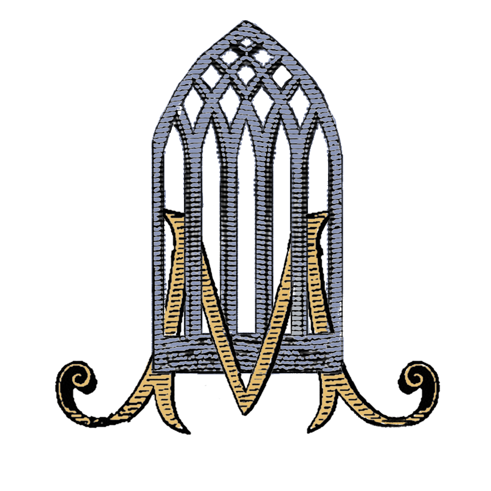

Faith Through the Ages
Our Parish History
A story of faith, resilience, and community along the banks of the River Deel in County Limerick.
“The faith of our fathers has been handed down through generations of Askeaton and Ballysteen families, a living inheritance more precious than any earthly treasure.”
— Parish Annals
Askeaton — A Town of Deep Faith
Askeaton (Eas Géitine) is one of the most historic towns in County Limerick, situated on the banks of the River Deel close to the Shannon Estuary. Evidence of Christian worship in the area dates back to the early medieval period.
The Franciscan Friary of Askeaton, founded in 1389 by the Earls of Desmond, stands as one of the best-preserved medieval ecclesiastical buildings in Munster. Its cloister and carved stonework speak to centuries of religious life in this place. The Marian window that inspired our parish logo is a tribute to this Franciscan heritage — the Marian M set within a Gothic lancet arch drawn from the Friary itself.
St. Mary’s Church, Askeaton
The present St. Mary’s Church was built in the nineteenth century, during the period of renewal following Catholic Emancipation in 1829. Under the Penal Laws, Catholics had been forbidden to build churches, and Mass was celebrated at outdoor Mass Rocks and in humble chapels. When the restrictions were lifted, the people of Askeaton built a church befitting their faith.
Subsequent generations added to and beautified the church, including its stained-glass windows, stations of the cross, and Marian shrines — all reflecting the deep Marian devotion that gives the parish its name and spirit.
St. Patrick’s Church, Ballysteen
The community of Ballysteen has long maintained its own strong Catholic tradition. St. Patrick’s Church serves the farming families and local community of this corner of County Limerick, and has been at the heart of spiritual and social life here across many generations. The two communities of Askeaton and Ballysteen have been united as a single parish, served jointly by the priests of the Diocese of Limerick.
Our Parish Logo
The parish logo depicts the Marian M set within a Gothic arch inspired by the windows of the Franciscan Friary of Askeaton. It is a symbol of our Marian identity — Ad Jesum per Mariam — and our deep roots in the medieval Christian heritage of this place. The gold scrollwork below the arch echoes the ornamental stonework of the Friary cloister.
The Penal Era
Like all Irish parishes, Askeaton and Ballysteen carry the memory of the Penal Laws. Mass Rocks across the local landscape mark the spots where the faithful gathered in secret to receive the Sacraments. This history of suffering for the faith profoundly shaped the devotional character of the parish — its Marian piety, its love of the Rosary, and its veneration of the priest.
Into the Present
Today, the parish continues its journey into a new era. The rhythms of parish life — the Sunday Mass, First Communions and Confirmations, weddings and funerals, the Stations of the Cross, the joys of Christmas and Easter — continue to bind the community together and to hand on the faith to the next generation.
Parish at a Glance
- DioceseDiocese of Limerick
- ChurchesSt. Mary’s, Askeaton & St. Patrick’s, Ballysteen
- PatronOur Lady, St. Mary
- MottoAd Jesum per Mariam
- Parish LogoMarian M within the Gothic window of Askeaton Franciscan Friary
- Nearby LandmarkAskeaton Franciscan Friary (founded 1389)

The Marian M within a Gothic arch taken from the windows of Askeaton Franciscan Friary.